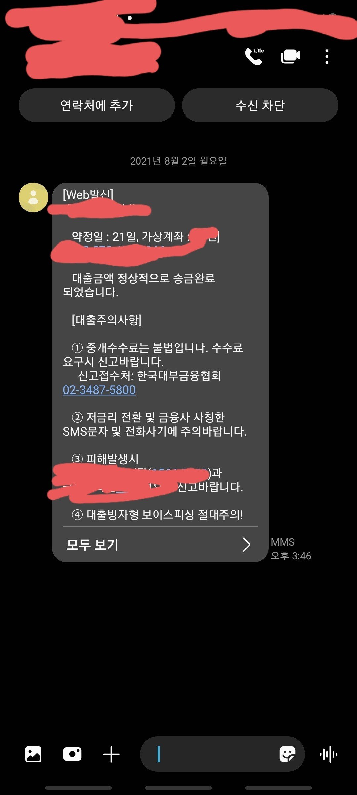
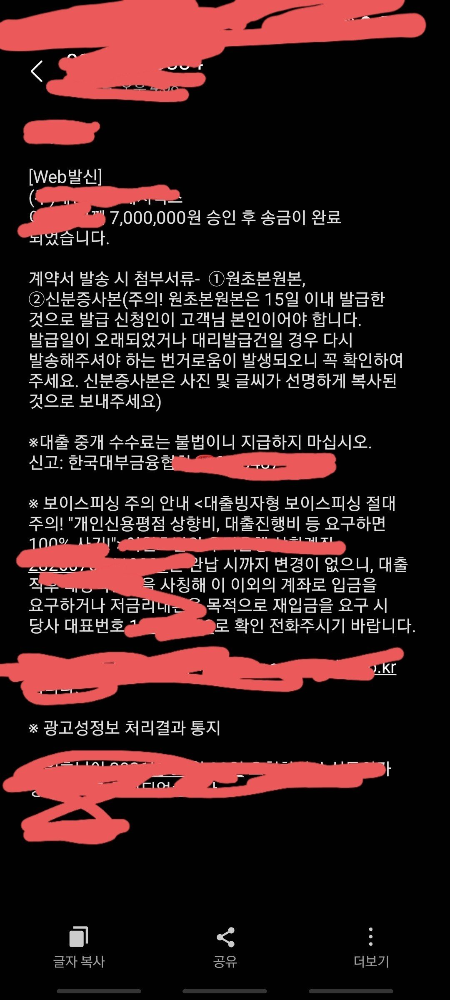

[개인회생자대출] 김한수상담사 대출후기
재직형태 : 직장인
재직기간 : 9년
사대보험 : 유
소득 : 5200만원
채무내역 : 1400 1000
회생 54/60 납부 4.9 미납
필요서류 : 신분증 원초본 건강보험납부확인서 자격득실확인서 통장사본 통장3개월거래내역서
채무도 많고 미납도 많아서 포기하고 있었는데 김한수상담사님의 친절한 상담과 진행으로 여유자금 및 미납금 해결까지 진행되었습니다
미납금 560만원 여유자금 1140
다시한번 김한수 상담사님께 감사드리며 회생 잘 끝나서 다시 긴급자금 필요하면 다시 찾겠습니다
끝까지 책임지고 진행 도와주셔서 너무너무 감사드립니다

